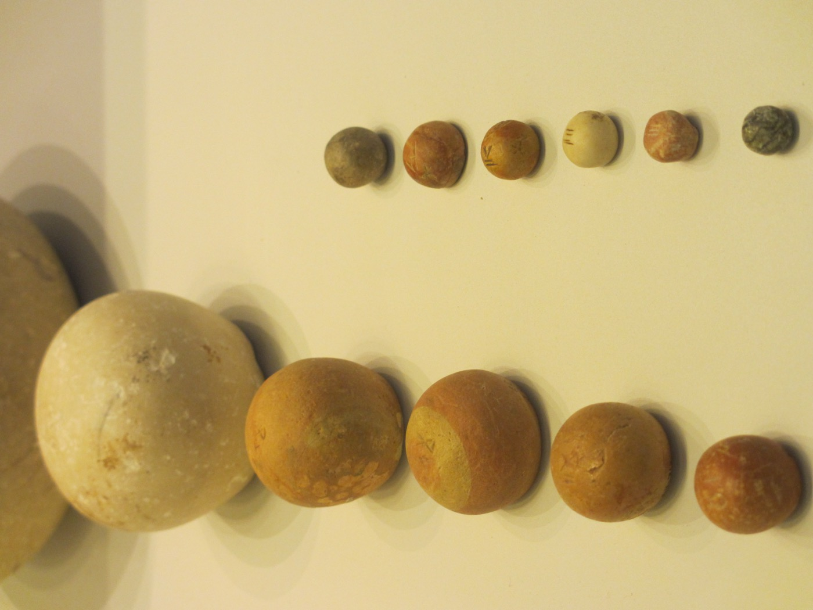

Numbers 18 — The Mister Translation

⚠ The units of v16, as physical objects: five shekels of silver by the shekel of the holy place — that is twenty gerahs. The larger domes on the left are shekel weights; the small ones on the right are gerahs, the twentieth part. Silver was not coined in this period, so a price in shekels was settled by putting metal in a balance against stones like these, and the incised marks on their upper faces are the denominations. ⚠ Honest about the date: these are Judahite weights of the eighth to sixth centuries BC, many centuries LATER than the wilderness this chapter is set in, and they come from the kingdom rather than the camp. They are not the stones Aaron would have used. They are the system the verse's arithmetic belongs to, and the reason a chapter can say 'twenty gerahs' and expect to be understood — the ratio is the same one the priests are quoting.
{kind=link}
Numbers 18:1-7 — God speaks to Aaron: three of the five times in the whole Bible, all in this chapter
⚠ Notice who is being spoken to. Almost everything in the Torah is said to Moses, and Moses passes it on: speak to Aaron and say to him. This chapter does not work that way. Three times — vv1, 8 and 20 — the formula is and Jehovah said to Aaron, with Moses not in the sentence at all. Searched across the whole Hebrew Bible, God addresses Aaron directly like that in exactly five verses, and three of them are here. The other two are Exodus 4:27, which is one line telling him to go meet his brother in the wilderness, and Leviticus 10:8 (already on these pages), the wine prohibition given immediately after two of his sons were killed for approaching wrongly. ⚠ So the pattern is exact and worth stating plainly: the only two times God gives Aaron sustained instruction in his own right, it is directly after someone has died for coming near the wrong way. Nadab and Abihu bought the first one. Korah's two hundred and fifty, and then fourteen thousand seven hundred more, bought this one.
And this is the answer to the question Numbers 17 ended on. The congregation's last words were a panic: everyone who draws near, who draws near to the dwelling of Jehovah, dies. Are we to be finished off, perishing? Nobody answered them. This chapter is the answer, and it is not reassurance — it is a job description. Somebody will indeed die if the sanctuary is approached wrongly; the arrangement is that it will be the priests, professionally, on everyone else's behalf.
⚠ The verb that says so is the chapter's first one: tissu et-avon ha-miqdash, you shall BEAR the guilt of the sanctuary. Nasa avon, to lift or carry guilt, is the phrase Numbers 14 turned on: God 'bears' guilt, which is how Hebrew says forgives, and then the same verb turns around and the people bear their own. Here it turns a third way. The priest bears it for the sanctuary — not his own guilt, and not God's forgiveness, but liability absorbed on behalf of a building and everyone who comes near it. The shelf divides sharply on whether to say so. KJV, ASV, Geneva and the Douay-Rheims all keep the concrete verb — 'shall bear the iniquity of the sanctuary' — as do RV60 and RV 1909 with «llevaréis el pecado del santuario». The modern versions convert it into an abstraction: NIV 'bear the responsibility for offenses connected with the sanctuary', NVI «se expondrán a sufrir las consecuencias», TLB 'are responsible for any desecration', and NWT 1984 'will answer for error against the sanctuary'. ⚠ Both are defensible and the difference is not small: the literal versions leave the reader holding a physical image of a weight being carried by somebody, and the modern ones replace it with an office-holder's accountability. This translation keeps the weight.
⚠ V2 puts both Hebrew words for ‘tribe’ side by side, and one of them is last chapter's rod. Matteh Levi shevet avicha — three words, two different nouns, one tribe. Matteh is the word Numbers 17 spent a chapter on, the staff that budded and also the tribe; shevet is the other word that means both a rod and a tribe, and it is the one in Jacob's blessing and in the shevet shall not depart from Judah. Eleven verses in the Bible use both words; in seven of them (Isaiah, Ezekiel) the pair is poetic parallelism for a stick, not a tribe. ⚠ The near-miss worth naming is Joshua 13:29, which does use both of one and the same tribe — half the shevet of Manasseh, half the matteh of the sons of Manasseh — but across two clauses. Only here do they stand together inside a single phrase. ⚠ The shelf tries four different strategies and none of them can show it. KJV and ASV print the same English word twice — 'the tribe of Levi, the tribe of thy father' — which is accurate and invisible, and RV60 and RV 1909 do the same with «la tribu de Leví, la tribu de tu padre». NWT 1984 and Geneva differentiate by demoting one — 'the tribe of Levi, the CLAN of your father' and 'of the tribe of Levi of the FAMILY of thy father' — which shows the reader two words but at the price of implying a smaller unit than shevet means. NIV and NVI collapse the pair entirely into 'your ancestral tribe'. ⚠ And the Douay-Rheims, following the Vulgate, does the most interesting thing on the shelf: it takes the second word in its OTHER sense and reads 'the tribe of Levi, and the SCEPTRE of thy father' — landing on the rod meaning, one chapter after a rod settled the priesthood. It is almost certainly not what the verse means. It is exactly what the word is doing.
V7's phrase for the priesthood is stranger than it looks: avodat mattanah, a service of gift. The two nouns pull opposite ways — avodah is labour, the same word used of slavery in Egypt, and mattanah is a present. Is the service the gift, or is the priesthood the gift, or is the gift the right to do the work? The shelf takes all three roads: ASV 'I give you the priesthood as a service of gift' leaves the knot tied, NIV 'I am giving you the service of the priesthood as a gift' unties it one way, Geneva 'I have made your Priest's office an office of service' unties it the other and loses the gift, and TLB 'the priesthood is your special gift of service' keeps both words and no grammar. This translation leaves it tied. ⚠ Whatever it means, the sentence it is embedded in is not a compliment: the gift is immediately followed by and the outsider who comes near shall be put to death. The perk and the hazard are one clause apart.
Numbers 18:8-19 — how a landless tribe eats, and the word for its income is the word that lifted the censers out of the fire
Terumah and its verb run through this chapter sixteen times — and the only root that keeps up with it is qodesh, holy, also sixteen. ⚠ That tie is the chapter in one line: a passage about who gets paid uses the vocabulary of money and the vocabulary of holiness at exactly the same rate. This translation prints the noun as 'contribution' throughout, as it has since Leviticus 7:32. ⚠ But the root is rum, to lift, and it was in this reader's ear four verses ago: Numbers 17:2 had Eleazar told to lift out the censers of the dead men from the burning, the same verb, one chapter back. The priesthood's income and the salvage of a catastrophe are named by one motion — something raised out of a larger mass and set apart. ⚠ Five versions keep a lifting word and three do not, which is the whole argument about this root in miniature. Keeping it: KJV and Geneva 'heave offering', ASV 'heave-offering', and RV60 and RV 1909 «ofrendas elevadas», raised offerings. Losing it: NWT 1984 and NVI go abstract with 'contributions' and «contribuciones», and NIV paraphrases the gesture out altogether as 'whatever is set aside'. The abstractions are more accurate about what a terumah IS and blind to what the word SAYS.
The list itself is the argument. Read vv9-19 as a ledger and it is a complete alternative economy for a tribe that will be told, in one verse's time, that it owns no land: the most holy offerings, eaten by males only and inside the sanctuary; then the wave-offerings, eaten by anyone ritually clean in a priest's house, daughters included; then the best of the oil, wine and grain; the firstfruits; the devoted things; the firstborn. Rabbinic tradition later collected the priestly dues scattered through the Torah into a fixed list of twenty-four (Talmud, Chullin 133b; Bava Kamma 110b), and this chapter is one of its principal sources. ⚠ Note who is named: and to your sons and to your DAUGHTERS with you, twice (vv11, 19). The priesthood is a male office and its food supply explicitly is not.
⚠ V14 is one short sentence with the Bible's darkest word in it. Kol cherem b'Yisrael lekha yihyeh — every devoted thing in Israel shall be yours. Cherem is the BAN: the word for what is placed irreversibly beyond human use, which in the conquest narratives means destroyed rather than captured, and which Leviticus 27:28-29 says cannot be sold or redeemed ever. Here, in four Hebrew words, it is a line item in a priest's household budget. The versions split on whether to soften it: KJV and ASV keep the technical 'every thing devoted', NIV 'everything in Israel that is devoted to the Lord'; but the Douay-Rheims reads it as 'every thing that the children of Israel shall give BY VOW', and RV60 and RV 1909 do the same with «todo lo consagrado POR VOTO» — turning an irrevocable ban into a voluntary pledge. Geneva splits the difference by explaining it: 'everything separate from the common use in Israel'.
⚠ V16's price tag catches three versions doing three different things with a unit nobody uses any more. The Hebrew fixes a firstborn son's redemption at five shekels 'by the shekel of the holy place — that is twenty gerahs', already glossing its own unit for a reader who might not know it. ASV and KJV transliterate and leave it: 'twenty gerahs'. NIV keeps the word and adds a verb, 'which weighs twenty gerahs'. The Douay-Rheims reaches for a Greek coin instead — 'five sicles of silver… a sicle hath twenty OBOLS' — and RV 1909 follows the Vulgate there with «veinte óbolos», while RV60 revises back to «veinte geras». ⚠ And the TLB converts to money its own readers carried: 'there must be a payment of two and a half dollars made for each firstborn child.' It is the clearest example on this shelf of what a paraphrase costs. The sum is comprehensible and instantly wrong. Five shekels was a serious price: Judges 17:10 (not yet on these pages) has a man hire a live-in Levite as his household priest for ten shekels a year, plus clothing and board — so redeeming one firstborn son cost about six months of a clergyman's cash wages. 'Two and a half dollars' told a 1971 reader it was pocket change.
⚠ ‘A covenant of salt’ (v19) is a phrase, not a metaphor being invented here. B'rit melach olam occurs in exactly two verses in the Hebrew Bible: this one, and 2 Chronicles 13:5, where it describes the permanence of David's dynasty. Behind both stands Leviticus 2:13 (already on these pages), which requires salt on every grain offering and calls it 'the salt of the covenant of your God'. Salt preserves; a covenant of salt is one that does not spoil. ⚠ Two versions on the shelf simply delete it. TLB renders the clause 'this is a permanent contract between the Lord and you and your descendants', and the NVI reads «Este es un pacto perpetuo» — both correct about the meaning and both leaving the reader with no idea why salt was mentioned, or that this verse is one of the two places the phrase exists. KJV, ASV, Geneva, the Douay-Rheims, NIV, NWT 1984, RV60 and RV 1909 all keep the salt.
Numbers 18:20 — ‘I am your portion and your inheritance’: the most quoted line in the chapter is a property law
This is the verse people know, and it is usually quoted as devotion — God is enough, God is my treasure. ⚠ In context it is first of all a statement of what Aaron does not get. Israel is about to divide a country. Every other tribe will receive a nachalah, a heritable landholding that stays in the family, and a chelek, a measured share of it. The priests receive neither. In their land you shall have no inheritance, and no portion shall be yours among them — and then, in the same breath and using the very same two nouns: I am your portion and your inheritance. The consolation is built out of the words just taken away, which is why it lands.
The two nouns are near-synonyms and the chapter needs both. Nachalah is what you inherit and pass on — it is about time, generations, a family staying put on a piece of ground. Chelek is what you were allotted when the thing was divided — it is about the moment of the division, a share out of a whole. Losing both means the priesthood has no past claim and no future one. ⚠ The arrangement has a cost the chapter is honest about and later books are honest about too: a tribe with no land has no independence, and lives on what other people bring. The Levites of Judges and 1 Samuel are itinerant and poor.
⚠ The shelf is unanimous and then one version isn't. KJV 'I am thy part and thine inheritance', ASV and NIV 'I am your portion and your inheritance', Douay-Rheims 'I am thy portion and inheritance', Geneva 'I am thy part and thine inheritance', NWT 1984 'I am your share and your inheritance', RV60 and RV 1909 «Yo soy tu parte y tu heredad», NVI «yo soy tu porción; yo soy tu herencia». ⚠ The TLB alone rewrites the whole verse into 'You priests may own no property nor have any other income, for I am all that you need' — which is a fair summary of the sentiment and drops the legal vocabulary that makes the sentence work. Once 'portion' and 'inheritance' are gone, the reader cannot see that the second half of the verse is quoting the first half back.
Numbers 18:21-24 — the tithe is not charity, it is payroll
The tithe arrives here with a preposition attached that changes what it is: chelef avodatam, IN EXCHANGE FOR their service. It is not a donation and not a religious duty discharged by the giver; it is stated as compensation for work performed, and v31 will call it outright sakhar, wages. ASV 'in return for their service', NIV 'in return for the work they do', NWT 1984 'in return for their service'; KJV flattens it to 'for their service'. ⚠ Leviticus 27 (already on these pages) legislated the tithe without ever saying who receives it. This is the paragraph that answers that, and it was promised there.
⚠ And v22 states the arrangement in one sentence, as the direct answer to last chapter's cry. And the children of Israel shall no longer come near the tent of meeting, to bear sin and die. The people had said everyone who draws near dies; the reply is not 'no you won't', it is 'you will not be the ones drawing near'. The verb qarav, which occurs eleven times across Numbers 16–17 (six and five) and six more times here — with the related noun qorban, an offering, literally a thing-brought-near, once more at v9 — gets its final legal disposition: the Levites come near, everyone else does not, and the danger is contained by being assigned to somebody. ⚠ The same verb of bearing from v1 returns in v23 — and they shall bear their guilt — and it is genuinely ambiguous whose guilt is meant. It may be the Levites' own liability for errors in the service, or the people's, borne on their behalf, which is what v1 said about the priests — and the shelf takes both sides, sometimes within one publisher. NIV resolves it toward the Levites: 'bear the responsibility for any offenses THEY COMMIT AGAINST IT'. ⚠ Its own Spanish edition resolves it the opposite way: NVI «cargarán con la culpa DE LOS ISRAELITAS», the people's guilt, not their own — and the Douay-Rheims agrees with the Spanish, 'and bear the sins OF THE PEOPLE'. TLB invents a third reading, 'they shall be guilty if they fail'. KJV, ASV, Geneva, RV60 and RV 1909 keep it open. This translation keeps it open too.
Numbers 18:25-32 — a tithe of the tithe, and the Hebrew word for ‘the best’ is the word for fat
The Levites are taxed on their salary. Having just been given every tithe in Israel, they are told to lift a tenth out of it for Aaron — ma'aser min ha-ma'aser, a tithe of the tithe (v26). ⚠ The remarkable clause is the next one: once they have done that, the remaining nine-tenths shall be reckoned to you like the grain from the threshing-floor and like the fullness from the winepress (v27). A tribe with no fields is told its income counts as harvest. It is a legal fiction, stated as one, and it lets the Levites be taxed like farmers precisely because they are not farmers. ASV keeps the arithmetic visible with 'a tithe of the tithe'; KJV converts one half to 'a tenth part of the tithe', NWT 1984 converts both to 'a tenth part of the tenth part', and RV60 and RV 1909 keep it whole with «el diezmo de los diezmos».
⚠ Five times, in four verses (v12 twice, then vv29, 30 and 32), ‘the best’ is literally ‘the FAT’. Chelev is the hard suet around an animal's organs, the portion Leviticus reserves for the altar and forbids anyone to eat — and by extension it is the richest part of anything at all, so v12's 'the best of the fresh oil' is in Hebrew the fat of the oil. This translation prints 'the best', because 'the fat of the olive oil' in English says something about grease rather than quality, and the reader would take it wrongly. ⚠ And the chapter uses the word in BOTH senses without flagging the shift: in between those five, at v17, chelev means actual suet — the fat of a firstling ox burned on the altar. Six occurrences, one word, two jobs, and nothing in the Hebrew marks which is which except the thing it is attached to. ⚠ But it is worth seeing what the metaphor does here: the word for the one part of an animal that a worshipper may never keep is the word for the part of the harvest the Levite must hand on. What you give up is named after what was never yours.
V31 is the plainest sentence in the chapter and the most easily skipped: you may eat it in any place, you and your household, for it is your wages. After thirty verses of restricted access — most holy things eaten only in a most holy place, only by males, only by the clean — the tithe comes with no sanctuary attached. Geneva, NWT 1984 and NIV all say 'wages'; KJV, ASV and the Douay-Rheims prefer 'reward', which in modern English drifts toward a prize rather than a paycheque; RV60 and RV 1909 read «remuneración» and TLB 'compensation'. The Hebrew sakhar is the ordinary word for a hired man's pay.
⚠ And the chapter ends where it began, on bearing. V32: you shall bear no sin over it… so that you do not die. The first verse put the weight on Aaron; the last verse tells the Levites how not to add to it. Between them the chapter says 'die' or 'be put to death' four times — vv3, 7, 22 and 32 — with a threat of wrath at v5 alongside, which for a passage that is formally a schedule of allowances is a striking amount of mortality. That is the point. The allowances exist because the danger does.
Notes on this translation
Decisions. The Hebrew and English chapters agree here — 32 verses on both sides — which is worth saying out loud after Numbers 17, where they did not. There are four Masoretic paragraph breaks (after vv7, 20, 24 and 32 — three petuchot and one setumah, the setumah after v20), and they mark the chapter's real seams: the priests' charge, the priests' food, Aaron's landlessness, the Levites' tithe. Fixed renderings already established on these pages are kept rather than re-decided: terumah is 'contribution' (as at Leviticus 7:32), tenufah 'wave-offering', avon 'guilt', cherem 'devoted', reach nichoach 'soothing aroma'. Four new dictionary entries in both languages: shevet, the other word for both a rod and a tribe; nachalah, the heritable landholding; chelek, the allotted share; and sakhar, a hired man's wages. Three existing entries were rewritten to carry this chapter: matteh (which now names its partner), terumah, and melach, whose forward promise about the covenant of salt this chapter pays. No new encyclopedia entries — the chapter names only Aaron, Moses and Levi.
Echoes paid — four. Numbers 17 ended by planting this chapter as the one that 'answers this chapter's closing question by describing what the priests carry so nobody else has to'; v1 and v22 are that answer, in those words. Numbers 17:2's rum, the lifting that pulled the censers out of the fire, comes back fifteen times as the priests' own income. Leviticus 2:13's salt of the covenant becomes the covenant of salt at v19. And Leviticus 27, which legislated a tithe without naming its recipient, is answered at vv21-24, exactly as that chapter said it would be.
Patterns worth carrying forward. First: the chapter is addressed to Aaron, and that is rare enough to be a finding — three of the Bible's five direct divine addresses to him are here, and the only other sustained one also follows a death at the sanctuary. Second: nasa, to bear, frames the whole thing — v1 opens with the priests bearing the sanctuary's guilt and v32 closes with the Levites warned not to bear sin, and the same verb in Numbers 14 meant forgiveness. Third: this is a chapter of money written entirely in the vocabulary of holiness, and the vocabulary keeps cutting the wrong way — the ban is income, the fat is the tax, the wages are holy, and the gift is a job.
Echoes planted. Numbers 19 (now on these pages), the red cow — traditionally the red heifer, and that chapter explains why this project does not call it one — which continues this chapter's subject — who absorbs contamination on everyone else's behalf — by a completely different mechanism; Deuteronomy 18:1-2 (not yet), which repeats 'Jehovah is his inheritance' and extends the landlessness to the whole tribe; Joshua 13:14 and 33 (not yet), where the land is actually divided and Levi is actually skipped, twice; and Hebrews 7:5-9 (not yet), which reads vv21-28 as an argument about Melchizedek, on the ground that Levi paid tithes 'while still in the loins of his father'.
⚠ A note on order: Numbers stands on these pages at chapters 1, 2, 3, 4, 5, 6, 7, 8, 9, 10, 11, 12, 13, 14, 15, 16, 17, 18, 19, 20, 21, 22, 23, 24, 25, 26, and 27. Chapters 28–36 remain the open sequence.